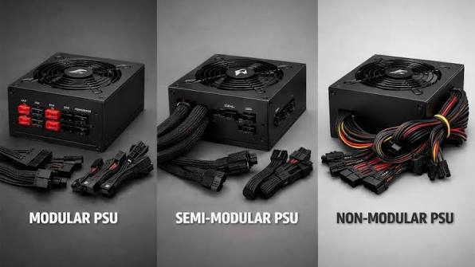

Modularna napajanja olakÅ¡avaju slaganje urednog raÄunala

Kod modularnih napajanja korisnik spaja samo kablove koji su mu potrebni.
Takav pristup olakÅ¡ava slaganje raÄunala i poboljÅ¡ava protok zraka u kućiÅ¡tu jer ima manje viÅ¡ka kablova.
Polumodularna napajanja Äesto su dobra sredina jer imaju nižu cijenu, a i dalje nude urednije slaganje.